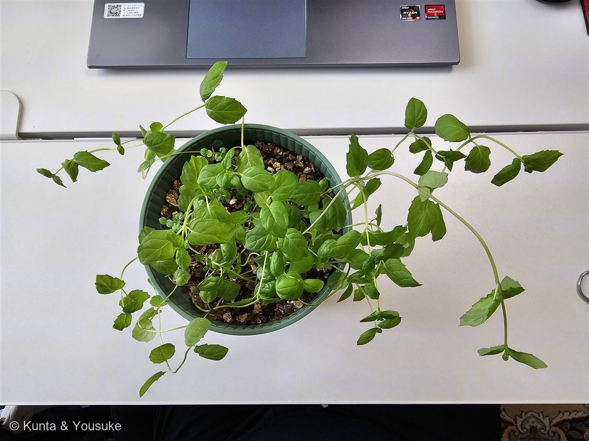
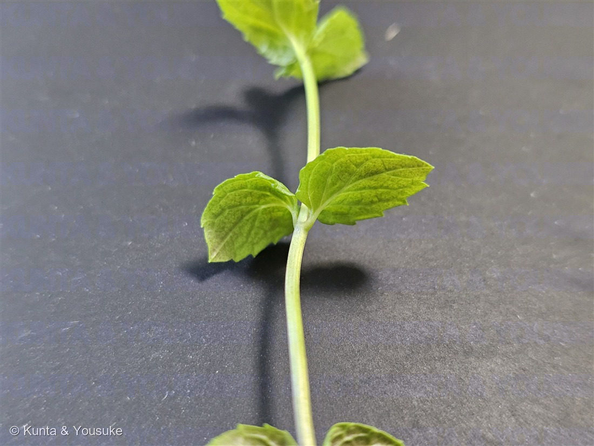
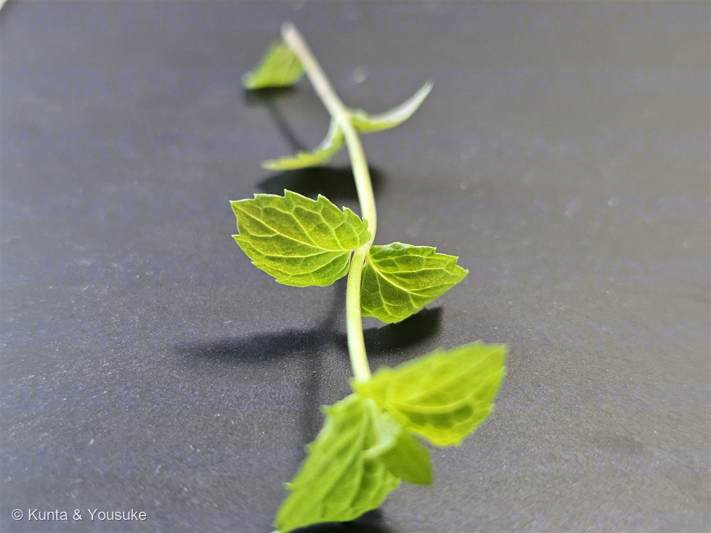

地図を読み込んでいるよ…
🔍 写真も地図も、押しているあいだ拡大して見られるよ（スマホは指を置いてすこし待ってね）。
🌍 の地図＝この子がもともと自生している場所を緑に。ヨーロッパ〜地中海地方（ハッカ属の中心。栽培されて世界じゅうに逸出）。
⭐ハッカ属（ミントの仲間）は、ヨーロッパ〜地中海地方が中心だよ。⚠でも栽培されて世界じゅうに広がっているので、地図はもともとの故郷だけを塗ったよ。⚠この子は種が確定していない（ミントは交雑しやすい）ので、あくまで“ミントの仲間の故郷”だと思ってね。
⚠ 地図は国（日本と中国だけ県・省）までしか塗れないから、ほんとうの分布より広く見えていることがあるよ。地図はだいたいの場所。正確なところは、上の文を見てね。
ミント（おうちの子）
Mentha sp.
別名 · mint／ 原産 · ヨーロッパ〜地中海地方／ 見どころ · ⭐味見でペパーミントを否定・メントールの少ないマイルド系・033の“おうち版”
シソ科 · Lamiaceae（ハッカ属 Mentha）── 033 ミント（野生の子）／015 ホーリーバジル・021 スイートバジルと同じシソ科
育てているおうちの鉢・西向きの窓辺ミントは必ず単独の鉢で
名前と学名の由来 ── 冥界のニンフ、ミンテー
- 和名ミント／薄荷（はっか）。⭐属名 Mentha（メンタ）＝ギリシャ神話の水の妖精ミンテー（Minthe）から。冥界の王ハデスに愛されたミンテーが、女神ペルセポネの嫉妬で草に変えられた——それが、この香りの草だといわれる。
- 033 ミント（野生の石畳の子）と同じ、シソ科ハッカ属。この子は、その“おうち版”だよ。
この植物のこと ── おうちの、暴れん坊
- シソ科ハッカ属のミント。おうちの鉢で育てている子。⭐シソ科の目印は、033・015 ホーリーバジル・021 スイートバジルと同じ——対生の葉／四角い茎／もむと香る。
- ⭐とにかく旺盛。写真①を見て——鉢から、ランナー（走り茎）を四方八方に走らせて、机の上まで伸びていく。ミントは種じゃなく、自分のコピー（走り茎）で広がる。だから「ミントは絶対に地植えしない（＝ミントテロ）」が園芸の鉄則。おうちでも、単独の鉢で育てているよ。
- 葉はとがった卵形・ふちはギザギザ（鋸歯）・短い葉柄がある・脈がキルトみたいに凹む（写真②③）。
⭐ 香りと味で、名前を追う ── 033の“約束”の、答え合わせ
033のとき、ぼくは燻太さんに約束をお願いした——「次に会ったら、葉を1枚もんで、嗅いで、味見してみて」。⭐今回、燻太さんは、それをやってくれた。
- 匂い：すーっと甘い。
- 味：⭐清涼感は弱め・気持ち青臭い・舌先が全然ピリピリしない。
この「ピリピリしない」が、決定的だったんだ：
- ⭐舌の“冷たいピリピリ”の正体は、メントール（皮膚と舌の冷感センサー TRPM8 を刺激する。033で話した“温度計をだます”話だよ）。それが無い＝メントールが少ない。
- ⭐ペパーミントなら、メントールで舌がピリッと冷たいはず。それが無いから——この子は、ペパーミントじゃない（少なくとも、メントール豊富な子ではない）。⭐ぼくの「葉の形はペパーミント寄り」という見立ては、燻太さんの舌に負けた。味は、写真に写らない、決定的な証拠なんだ。
- 残るのは、メントールの少ない“マイルド系”——スペアミント（カルボン）系・アップルミント系・園芸の雑種のあたり。
- ⚠でも、まだ確定しない。理由は2つ：①ミントはとにかく交雑する（033と同じ）。②この子は、まだ若い株——やわらかい新芽だらけで、若いミントは香りも味も薄く、青臭い（精油は葉が育つほど濃くなる）。だから「青臭い・弱い」は、品種だけじゃなく“若さ”のせいもある。育ってから、もう一度味見すると、印象が変わるかも。
同定について
- ⭐確実＝シソ科ハッカ属（Mentha）：対生・四角い茎・もむと香る・ランナーで走る。
- ⚠ペパーミントは否定：食べても舌がピリピリしない（メントール少）。ペパーミントの“クールでシャープ”とは合わない。
- 種は保留：メントールの少ないマイルド系（スペアミント〜アップルミント系または園芸雑種）。⚠交雑しやすい＋若い株なので、写真と味だけでは種まで決めない（033と同じ正直ルール）。
- ⭐033との対：033＝野生の石畳の子・ほぼ無柄でしわ深い＝スペアミント系（味見できず保留）。この子＝おうちの子・短い葉柄・味見してマイルド（ペパーミントでないと判明）。野生と栽培、嗅げなかった子と、味わえた子。
育て方のポイント（おうちでは）
西向きの窓辺・レース越しのやわらかい光で育てているよ。ミントは丈夫で、初心者向き。
- ☀ 光：明るい日陰〜半日なた。強すぎる直射より、レース越しくらいが葉がやわらかい。
- 💧 水やり：土は湿り気味が好き。乾かしすぎるとすぐしおれる（でも根腐れ注意）。
- 🪴 鉢：⚠必ず単独の鉢で。ほかの鉢と土を共有させない（走り茎で乗っ取る）。地植えは厳禁。
- ✂ 収穫：どんどん摘むと、わき芽が出て茂る。摘むほど元気。
- 🌱 ふやし方：走り茎や挿し木で簡単。種はあまり要らない（コピーで増えるから）。
参考：一般的な園芸情報＋この子の観察。ミントの“クールの正体”＝メントールと TRPM8 の話は 033 ミント にくわしく。